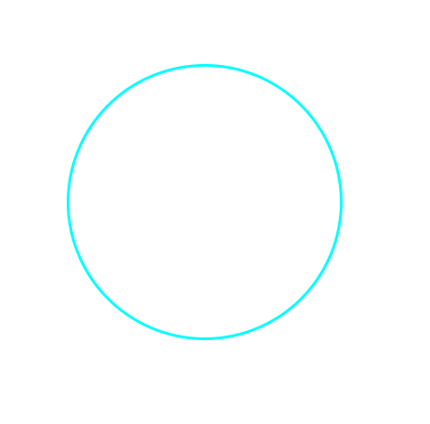
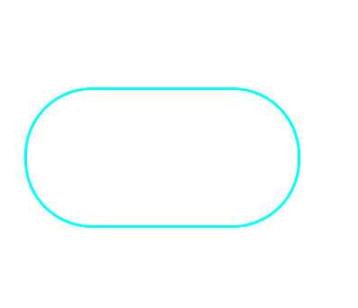

border-radius属性用于设置元素的外边框圆角
border-radius:length;radius半径（圆半径）原理：圆与边框的交际形成圆角效果。
圆的做法
其次，让border-radius的值等于div宽度的一般，或者等于50%
div{
width: 300px;
height: 300px;
border-style: solid;
border-color: aqua;
/* border:10px; */
/* background-color:pink; */
border-radius: 50%;/*或者是div*/
margin: auto;
}
圆角矩形做法
首先，做一个矩形div
然后让border-radius值等于高度的一半
div{
width：300px；
height：150px；
background-color;gray;
border-radius:75px;
}
使用box-shadow属性为盒子添加阴影
box-shadow:h-shadow v-shadow blur spread color inset;| 值 | 描述 |
|---|---|
| h-shadow | 必须。水平阴影的位置，允许负值 |
| v-shadow | 必须。垂直阴影的位置。允许负值 |
| blur | 可选，横糊距离 |
| spread | 可选阴影尺寸 |
| color | 可选。阴影颜色。参考CSS颜色值 |
| inser | 可选。将外部阴影（outset）改为内部阴影。 |
【注意】
默认的是外阴影（outset），但是不可以写这个单词，否则导致阴影无效
盒子阴影不占用空间，不会影响其他盒子排列
鼠标经过时显示阴影
div{
width: 200px;
height: 200px;
background-color: gray;
margin: auto;
}
div:hover{
box-shadow: 10px 10px 10px -4px rgba(0,0,0,.3);
}使用text-shadow属性将阴影应用于文本
text-shadow：h-shadow v-shadow blur color；| 值 | 描述 |
|---|---|
| h-shadow | 必须，水平阴影的位置，允许负值 |
| v-shadow | 必须。垂直阴影的位置。允许负值 |
| blur | 可选。模糊的距离 |
| color | 可选。阴影的颜色。参考CSS颜色值 |
【】不常用。